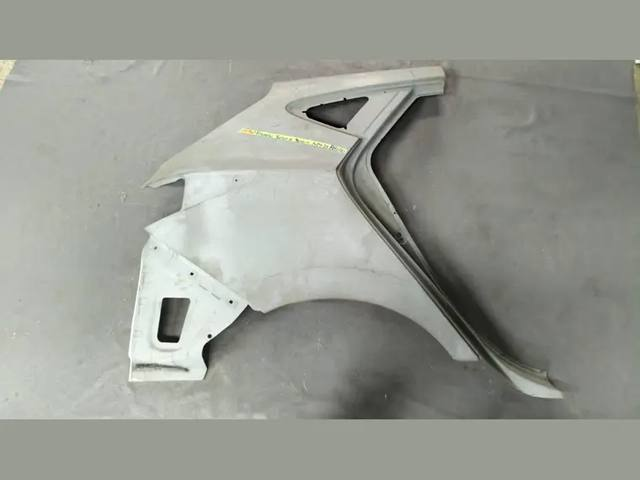
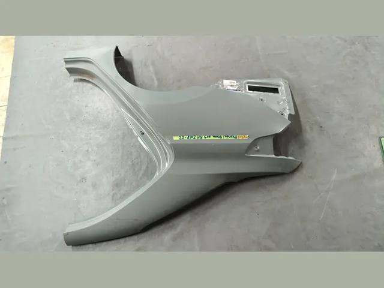
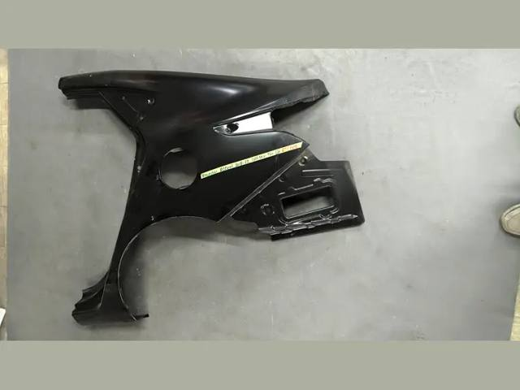
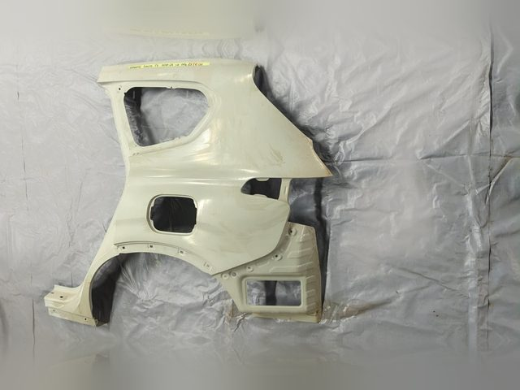
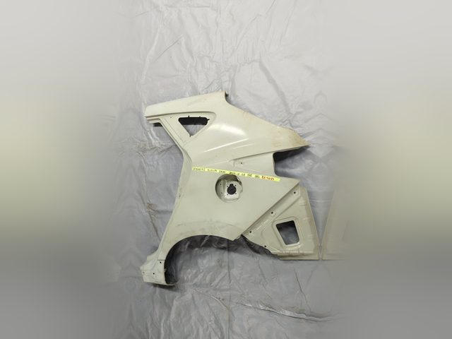
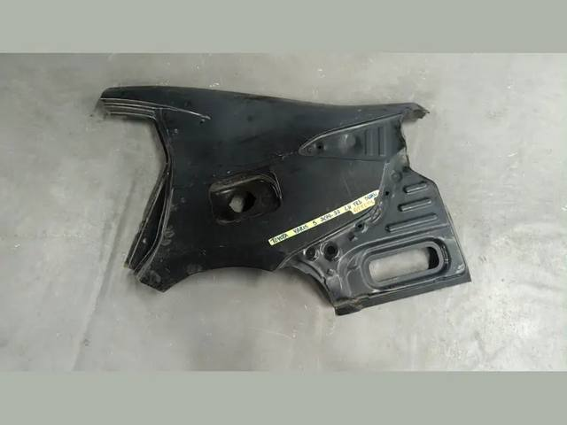
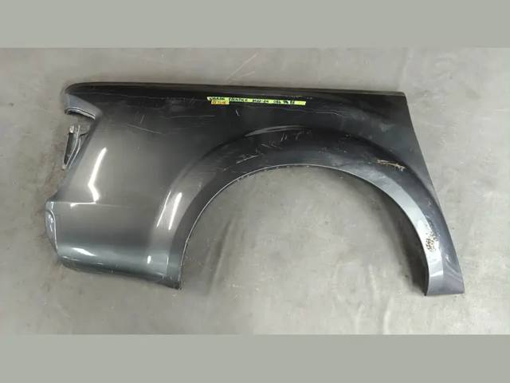
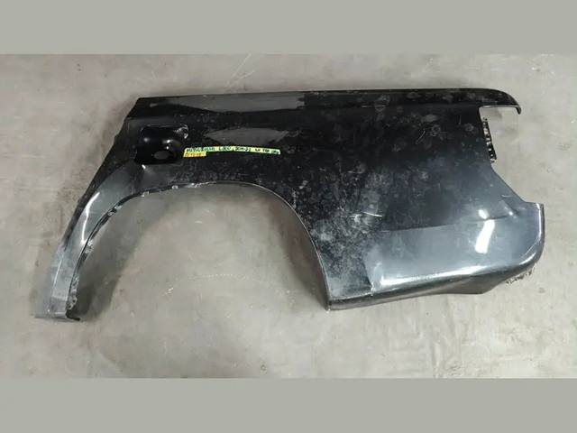

Guardafangos traseros en Panamá
22 disponibles hoy, originales y genéricas, cada una con su foto y su código. Elige la marca de tu carro:
- Garantía de 3 días
- Foto real de cada pieza
- Efectivo, Yappy o ACH
- Lunes a sábado, 8:00 a. m. a 5:00 p. m.
Guardafangos traseros para Hyundai 7

GFT001Hyundai Tucson2016-21 · lado derecho · genérico
GFT003Hyundai Verna2018-22 · lado derecho · original GFT006Hyundai i302009-15 · lado izquierdo · original
GFT006Hyundai i302009-15 · lado izquierdo · original
GFT009Hyundai Accent2018-22 · lado izquierdo · original nuevo GFT019Hyundai Santa FE2013-18 · lado izquierdo · original
GFT019Hyundai Santa FE2013-18 · lado izquierdo · original
GFT020Hyundai Santa FE2018-24 · lado izquierdo · original
GFT021Hyundai Tucson ix352009-15 · lado izquierdo · originalGuardafangos traseros para Toyota 3
 GFT005Toyota Yaris Hatchback2017-20 · lado izquierdo · original
GFT005Toyota Yaris Hatchback2017-20 · lado izquierdo · original GFT015Toyota Yaris Sedan2019-23 · lado derecho
GFT015Toyota Yaris Sedan2019-23 · lado derecho
GFT014Toyota Yaris Sedan2019-23 · lado izquierdoGuardafangos traseros para Nissan 2
 GFT010Nissan Qashqai2013-21 · lado izquierdo · original
GFT010Nissan Qashqai2013-21 · lado izquierdo · original
GFT016Nissan Frontier2022-24 · lado derecho · originalGuardafangos traseros para Mitsubishi 2

GFT018Mitsubishi L2002014-23 · lado izquierdo GFT017Mitsubishi L2002024-25 · lado izquierdo · original
GFT017Mitsubishi L2002024-25 · lado izquierdo · originalGuardafangos traseros para Suzuki 1
 GFT002Suzuki Vitara
GFT002Suzuki VitaraGuardafangos traseros para KIA 1
Guardafangos traseros para Honda 1
 GFT007Honda CR-V
GFT007Honda CR-VGuardafangos traseros para Lincoln 1
Guardafangos traseros para BMW 1
Guardafangos traseros para BYD 1
Guardafangos traseros para GAC 1
 GFT013GAC M6 Pro
GFT013GAC M6 ProGuardafangos traseros para Chevrolet 1
Otros tipos de pieza
Parrillas 339Faros y lámparas delanteras 265Defensas traseras 261Defensas delanteras 219Lámparas traseras 210Flares 183Covers de halógena 167Guardafangos 143Halógenas y faros antiniebla 114Puertas 99Cubrepolvos 93Refuerzos delanteros 79Tapas de baúl 69Capós 68Depósitos de agua 64Marcos de radiador 58Retrovisores 57Estribos y rolling boards 55Defensas traseras inferiores 55Defensas delanteras inferiores 54Tapas superiores de radiador 49Vidrios 47Molduras de puerta 47Molduras traseras 44Protectores inferiores 29Refuerzos traseros 28Copas 20Extensiones de defensa trasera 18Ventiladores 13Molduras delanteras 13Extensiones de defensa delantera 8Tableros 6Accesorios nuevos 5Soportes de defensa 2Discos de freno 1Covers de vagón (bedliner) 1